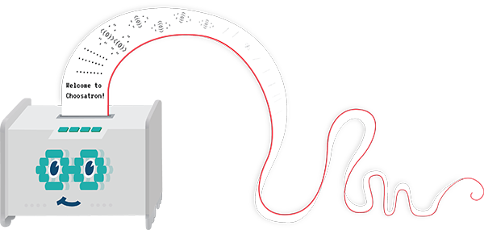

Choosatron Source
The Choosatron is a Choose Your Own Adventure® inspired story printer. Wi-Fi connected and fully hackable!
The content below includes everything necessary to setup, play, and write stories for the Choosatron Deluxe Adventure Matrix, including hardware designs, firmware, writing software, and development tools.
Hardware
kit-assets
Choosatron Kit Asset FilesFirmware
choosatron-photon-firmware
Choosatron Photon FirmwareWriting and content
choosatron-write
Choosatron Write, a cross-platform Chrome app, and the official setup and writing application for Choosatron. Issues Workflowstories
Choosatron story source.Mobile apps
android-app
The Choosatron android app.ios-app
The Choosatron iOS app.Development tools
docs
Documentation for the Choosatron firmware.Version control
We use Git for version control, and Github as our central repository for all of our source code. Anyone can view our open source repositories, and with a free Github account, raise issues and contribute to our source code.
Feature requests and bug fixes
We use Github Issues to track issues for each of our open source repositories, and Waffle.io to share our workflow.
Each of the above repositories has a link for issues and a waffle workflow board; feel free to submit feature requests and raise bugs on Github, or star a repository to follow its progress.
Contributions
We welcome contributions to all of our open source repositories. These contributions come in the form of a Pull Request, where you "fork" our repositories and then request that we "pull" your changes back into our repositories. You must have a Github account to make a contribution.
All contributors must first sign the Monkey with a Mustache Individual Contributor License Agreement (CLA), which is based on the Google CLA, and provides Monkey with a Mustache, LLC and the Choosatron team a license to re-distribute your contributions.
Whenever possible, please follow these guidelines for contributions:
- Keep each pull request small and focused on a single feature or bug fix.
- Familiarize yourself with the code base, and follow the formatting principles adhered to in the surrounding code.
- Wherever possible, provide unit tests for your contributions. We use Mocha to test Javascript and UnitTest++ to test C++.
Other resources
To learn about Choosatron's other resources, please visit our resources page, and chat with us in our community.